Led designs of iPad, mobile & TV apps for customers & staff that reduced eye test wait time by 38% in 1600+ Lenskart stores.
12 mins read · Updated on 8 May 2025
.
Refer details below
Store sales conversion increased
Eye test wait time reduced
Eye test rating increased
.
Who are at stores to purchase eyeglasses
Who are medically certified to do the eye tests
Who are attending the customers to do sales
An optometrist is an eye care professional who is medically certified to examine vision conditions in human beings.
Currently there are almost 2,000 optometrists enrolled with Lenskart.

.
Project Started
Released v1.0
.
After v1.0 release

.
Sales conversion increased
Eye test wait time reduced (north-star)
Eye test rating increased


78% customers walk-in to buy new eyeglasses & only 12% come just for an eye test. Since glasses are prescription-based, they have a medical need too.
After this flow, store operations became smoother & less chaotic.
👉 Faster & accurate eye tests mean customers spend less time inside clinic & more time shopping.
👉 Staff now have more time to sell & it's
easier to convince customers to buy when there's a change in their eye power.
.
Refer research below
They expect to be served in the order they arrive. A transparent token queue builds trust
Many walk in with family or friends. We should capture who the service is actually for, not just who shared their number
Optoms should see the same real-time queue as store staff to avoid confusion
Providing status & wait-time updates — like airports do — helps reduce frustration
Legacy design language, inconsistent icons, small tap areas, and not usable in both iPad orientations
“Pata nahi kitna time aur lagega”
Translation: “I don't know how much time it will take.”
.
I carried out the usability heuristic evaluation of then user flows and interfaces, primarily 2 flows:
Optometrist struggles to determine which customer to attend first, causing confusion
Staff request personal details (phone number etc) without explaining purpose, making customers feel it's only for marketing
Frequent customers must provide their details on every visit leading to their frustration
Staff often re-enters customer details instead of searching leading to duplicate entries and an overwhelming list
The system is not intuitive requiring training for staff to navigate by themselves

I conducted visits to several Lenskart stores at various times of the day.
Engaged with customers and store staff through candid conversations and impromptu interviews to gather insights on their needs and challenges.
We also analysed staff behaviour during peak and non-peak hours, identifying pain points supported by CCTV footage analysis using Tango AI for deeper insights.
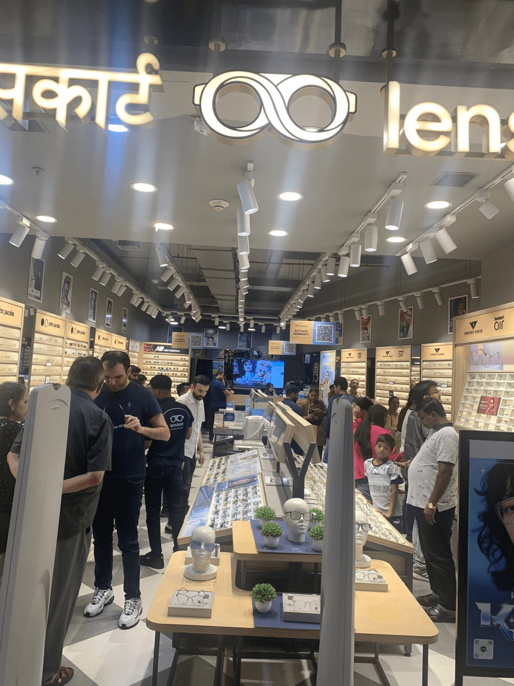
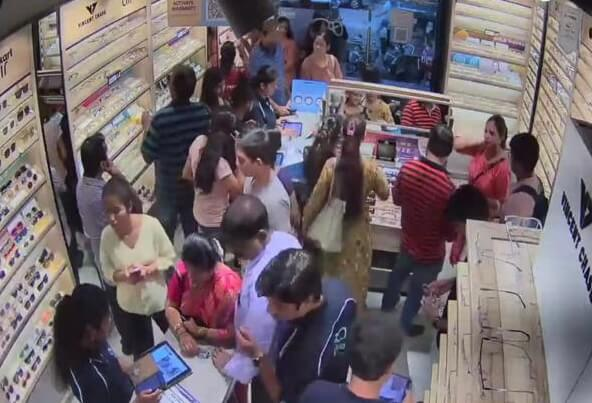
To understand how customer flow operates at stores, I visited places like McDonald's, KFC, airports and government offices.
This helped me observe how different environments handle queues, waiting times and service efficiency.
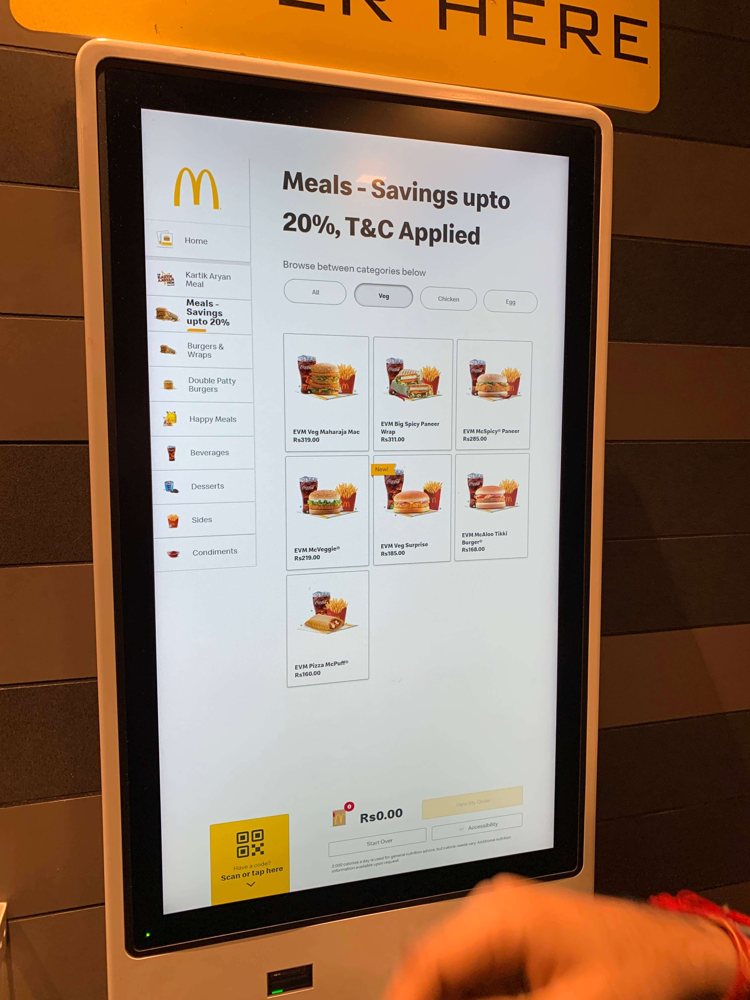
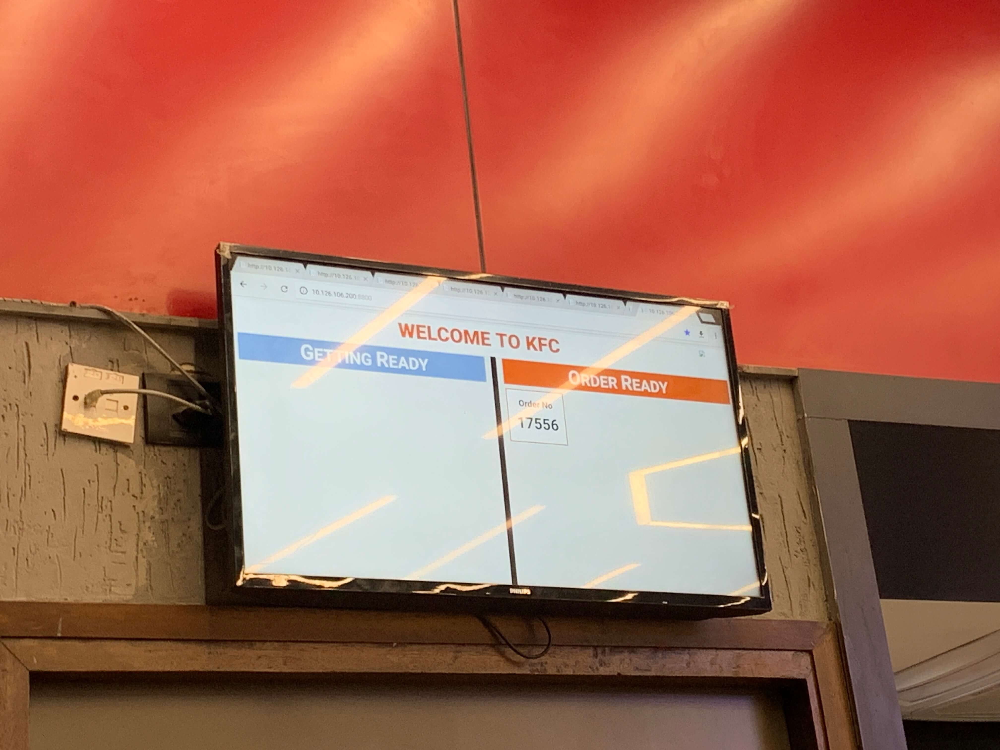
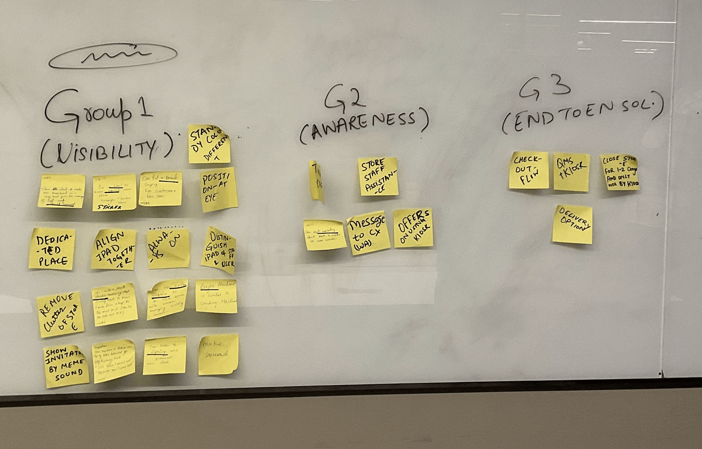
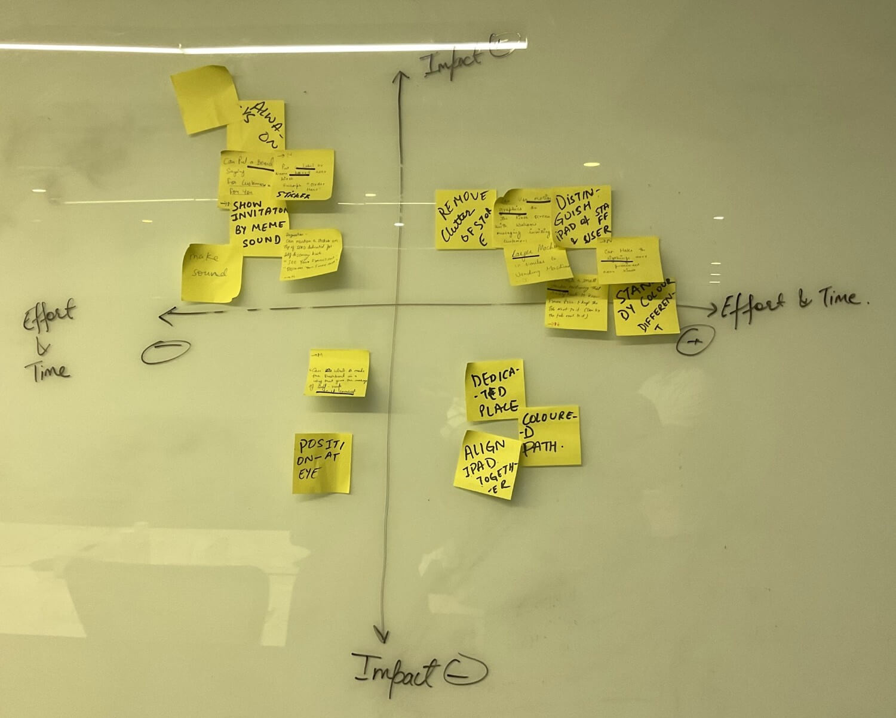
Token-based queue helps manage customer flow fairly & efficiently, reducing confusion & wait-time complaints
Capturing both the person giving the number & the one getting the eyes tested ensures smooth check-ins for families & groups
Showing the same token queue in the optometrist’s app aligns the entire staff, enabling timely & predictable eye tests
Auto-syncing AR prescriptions via Wi-Fi adapters saves 5–7 minutes per test, freeing optometrists to focus more on patient
This ensured adaptability & consistency.
Title XL in Typography.xl variant for Button.lg variant for Checkbox & Radio button..
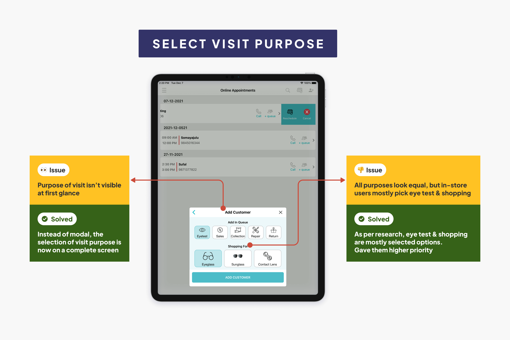
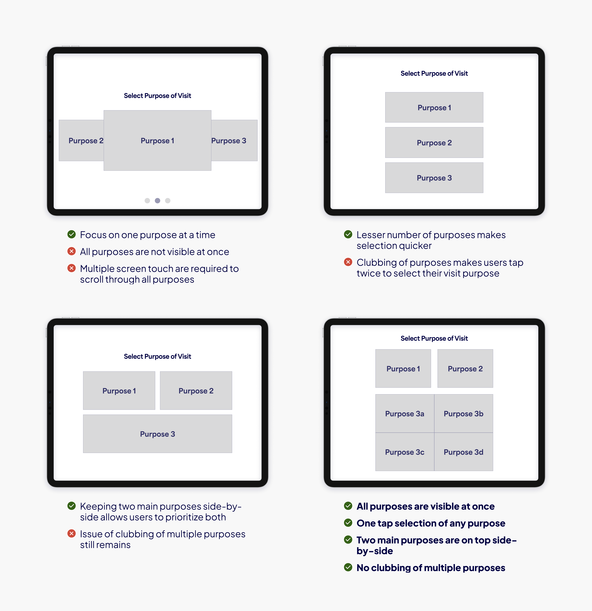

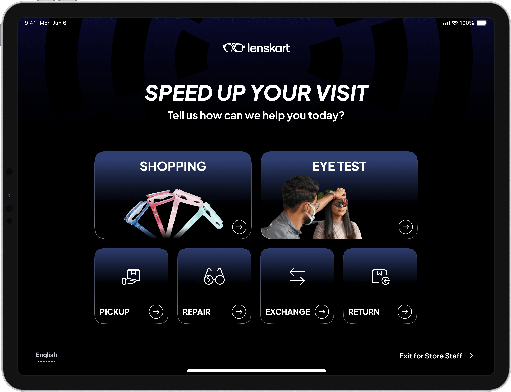
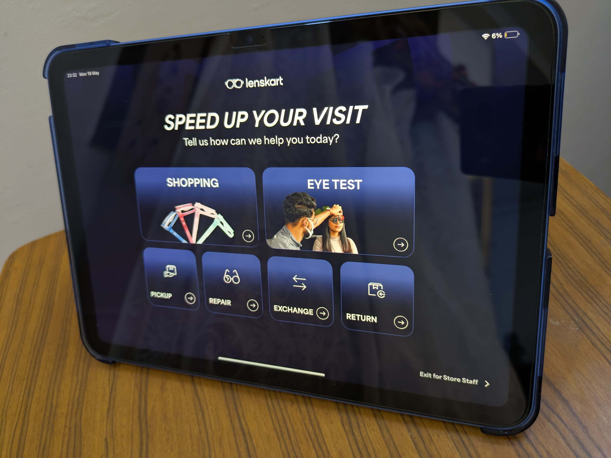


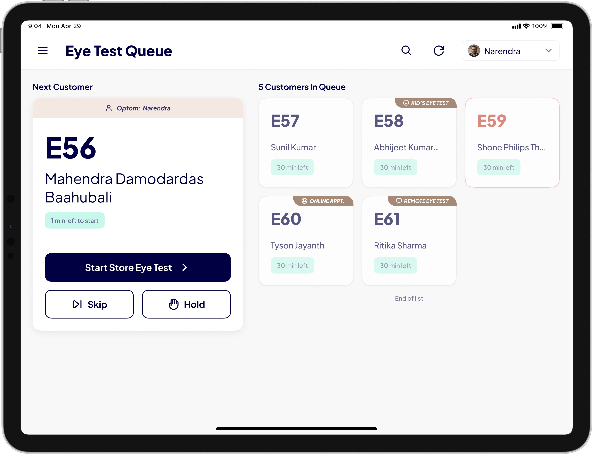

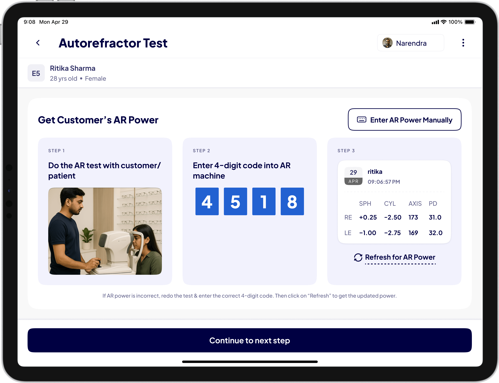
.
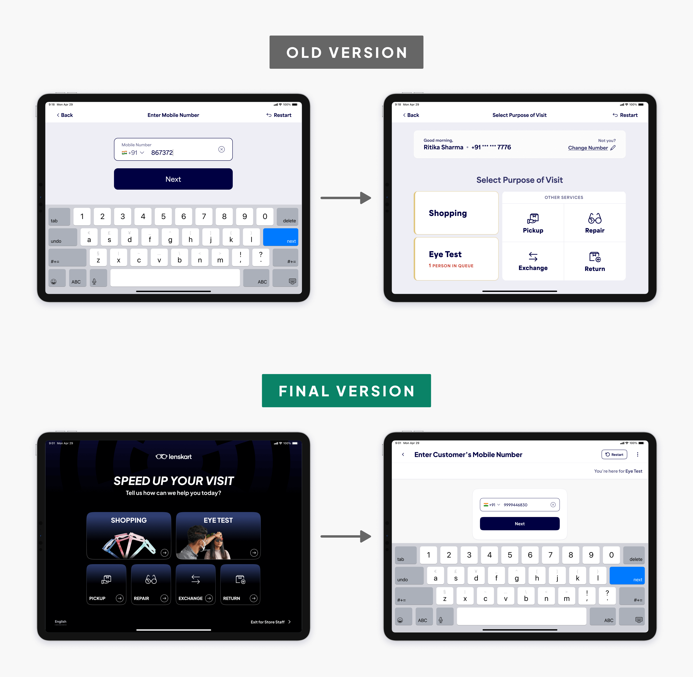

Patent pending
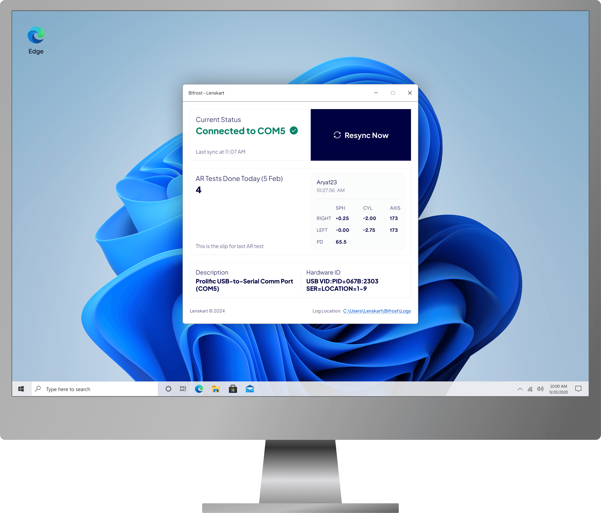

.
Thanks for reading 💖